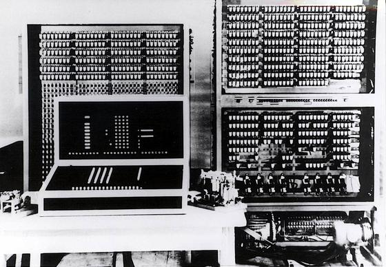
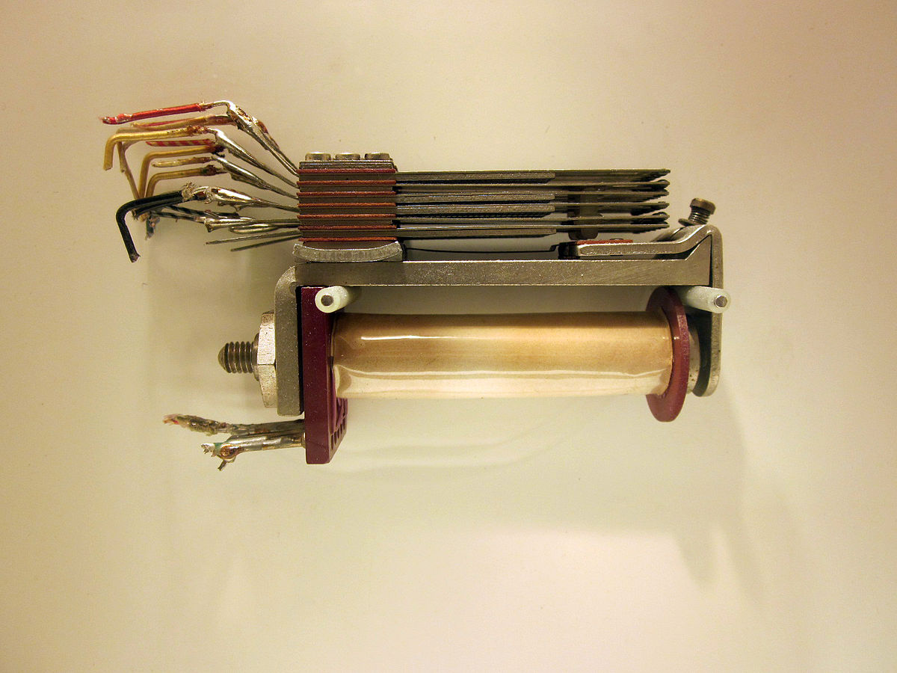

ZUSE Z3
Der erste schritt zum modernen Computer
Aufbau des ZUSE Z3

Arbeitsspeicher
Prozessor
Rechenteil
Steuerteil
„Monitor“
Quelle: Konrad Zuse Internet Archiv/Deutsches Museum/DFG
Was konnte der ZUSE Z3 ?
+ – × ÷ √
Logische Prozessoren


A
A
B
B
| A | B | OUT |
|---|---|---|
| 0 | 0 | 0 |
| 1 | 0 | 0 |
| 0 | 1 | 0 |
| 1 | 1 | 1 |
Quelle: Sebastian Lague - https://youtu.be/QZwneRb-zqA


A
A
| A | OUT |
|---|---|
| 0 | 1 |
| 1 | 0 |
Quelle: Sebastian Lague - https://youtu.be/QZwneRb-zqA
Wie kann der Rechner die Schalter betätigen?
RELAIS

Quelle: Wikipedia - Relais der Computer vom Typ Z3, Z5, Z11
BINÄR
| 8 | 4 | 2 | 1 |
| 0 | 0 | 0 | 0 |
Dezimal: 0
ADDITION IN BINÄR
| 1 | 1 | |||
| 0 | 1 | 1 | 1 | |
| + | 0 | 0 | 1 | 1 |
| 0 | 1 | 1 | 0 |
7 + 3 = 10
| A | B | SUM | CARRY |
|---|---|---|---|
| 0 | 0 | 0 | 0 |
| 0 | 1 | 1 | 0 |
| 1 | 0 | 1 | 0 |
| 1 | 1 | 0 | 1 |
SUBTRAKTION IN BINÄR
7 +
(-7)
?
= 0
| 1 | 1 | 1 | 1 | |
| 0 | 1 | 1 | 1 | |
| + | 1 ? | 0 ? | 0 ? | 1 ? |
| (1) | 0 | 0 | 0 | 0 |
Zweierkompliment
| -8 | 4 | 2 | 1 |
| 0 | 0 | 0 | 0 |
Dezimal: 0
Eine Zahl invertieren
Schritt 1: Ziffern invertieren
0110 > 1001
Schritt 2: 1 addieren
1001 > 1010